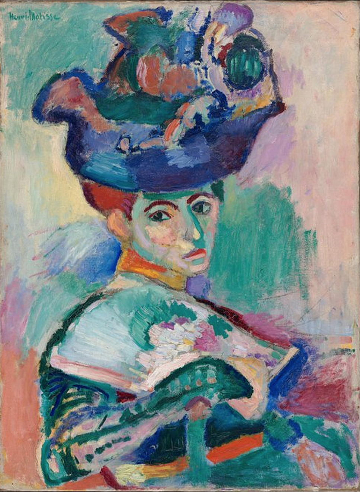

Abstract expressionism is a post–WW II art movement in American painting, developed in New York in the 1940s. It was the first specifically American movement to achieve international influence and put New York City at the center of the western art world, a role formerly filled by Paris.


So why America became the new center for world art?
During the period leading up to and during World War II, modernist artists, writers, and poets, as well as important collectors and dealers, fled Europe and the onslaught of the Nazis for safe haven in the United States. Many of those who didn't flee perished. Among the artists and collectors who arrived in New York during the war (some with help from Varian Fry) were Hans Namuth, Yves Tanguy, Kay Sage, Dali, Max Ernst, Jimmy Ernst, Peggy Guggenheim, Leo Castelli, Marcel Duchamp, André Masson, André Breton, Marc Chagall, Fernand Léger, and Piet Mondrian. A few artists, notably Pablo Picasso, Henri Matisse, and Pierre Bonnard remained in France and survived.
Influencers and preceding styles
It's widely considered that surrealists opened up new possibilities with their emphasis on tapping the unconscious.
One Surrealist device for breaking free of the conscious mind was psychic automatism— automatic gesture and improvisation.
Modernist artists that undoubtly influenced abstract expressionism were Pablo Picasso, Joan Miro, Henry Matisse.
